The diary for hairdressers on the move.
MChair is an appointment diary for Android for a mobile hairdresser who also sees clients at home. It works out the travel between visits, keeps out days and home days apart, plans the day's route and counts the miles for your tax return, with every client's formulas, skin tests and photos a tap away.
It is free, with no subscription, no fees on new clients and no adverts. Everything stays on your phone, encrypted, and the app cannot go online.
Free, with nothing to unlock. Android 8 or later. Version 1.0, 2.5 MB. Compare · Release notes
Chrome may say the file might be harmful. It shows this for app files that do not come from Google Play. Choose Download anyway, open the file, and allow your browser to install apps if Android asks.
How it works
Set up takes about two minutes: your name and home address, your days out and at home, your usual travel and call-out fee, and your services. A ready-made menu of cuts, colours, weddings and care home services gets you started, with times and prices you can change.
Book
Tap +, pick the client, the services and where: their home, yours or a venue. MChair works out the travel, the length, the price and the call-out, and warns you about clashes and skin tests.
Drive
Tap Route for the day in order and open it in Maps. Send your day to someone you trust if you like.
Get paid
Tap Take payment when you finish, rebook them in one tap, and see the takings and miles add up in Takings.
What it looks like
Calm, clear and easy to read between clients, in the same warm colours and type as Calmer and Chair, in plum. Visits out, clients at home and venues each have their own colour.
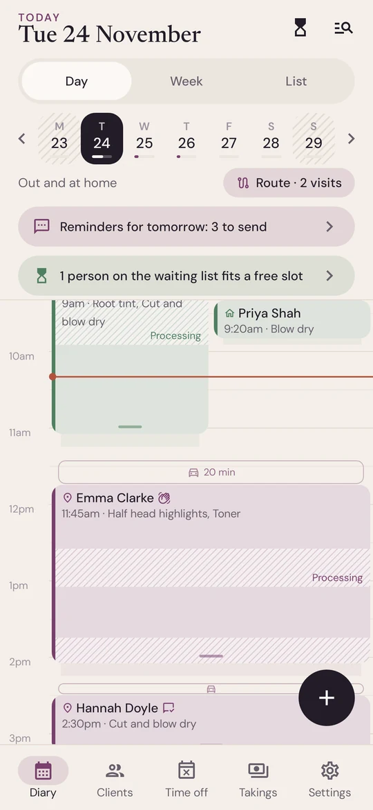
DiaryClients at home in sage, visits out in plum, with the travel between them blocked out. 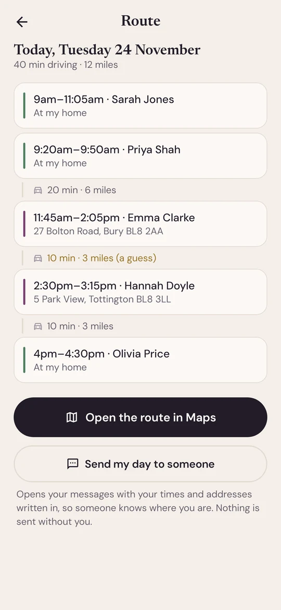
RouteThe day in order, the drive between each stop, and the whole route in Maps. 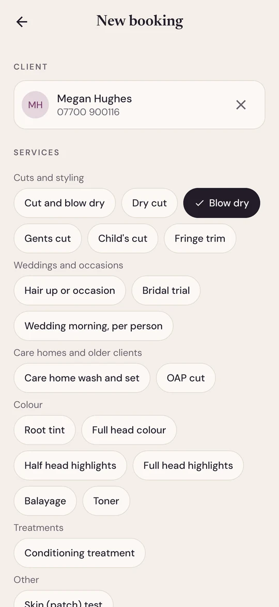
New bookingPick the services and where. Travel, price and call-out follow. 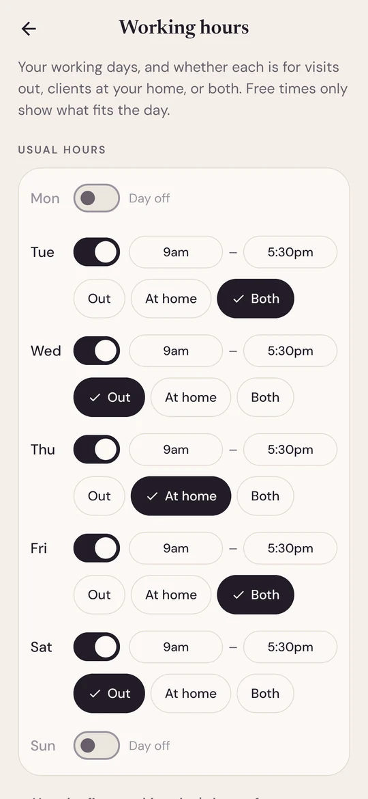
Working hoursOut days, home days, or both, day by day. 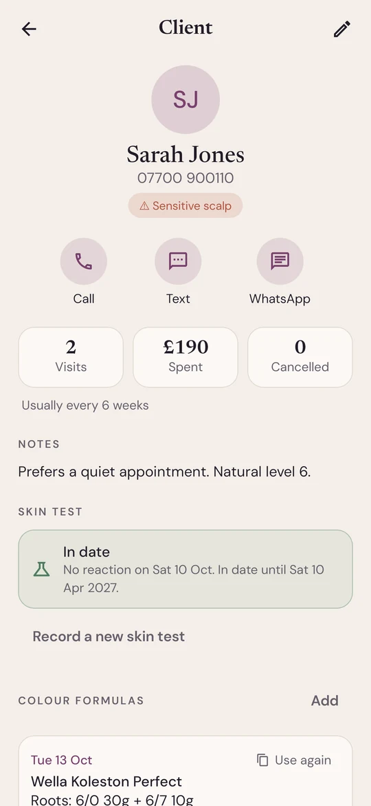
ClientVisits, spend, notes, skin tests and colour formulas in one place. 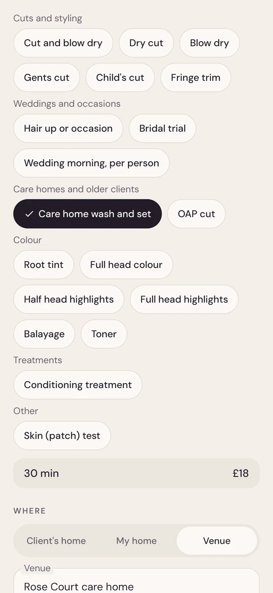
VenuesCare homes and weddings, remembered for next time. 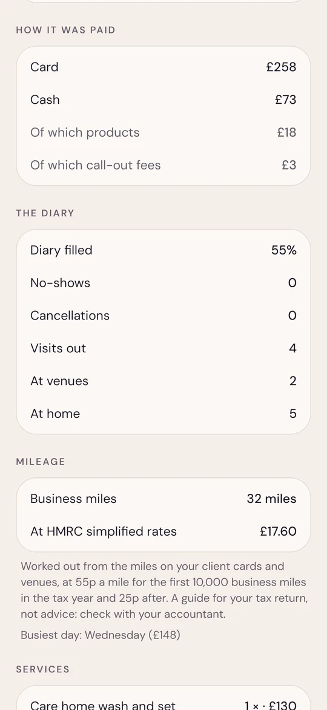
TakingsTakings, call-outs, visits out and at home, and the miles. 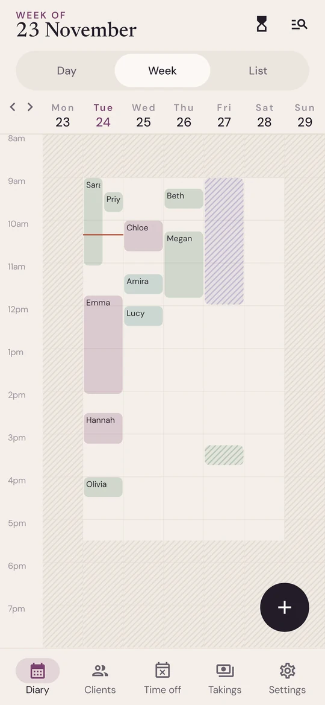
WeekThe whole week at a glance, time off and bank holidays shaded. 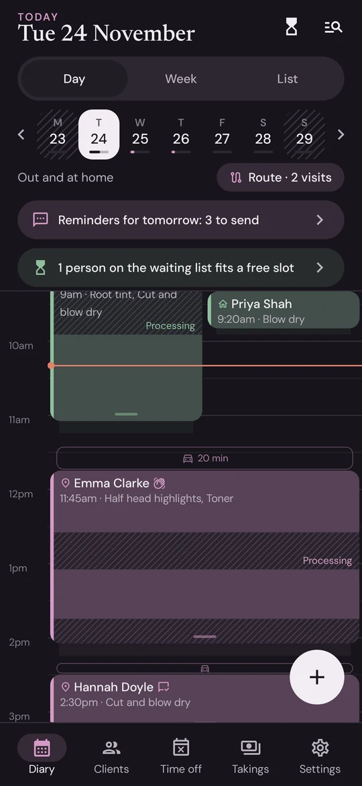
Dark themeThe same diary in a softer, darker look for late finishes.
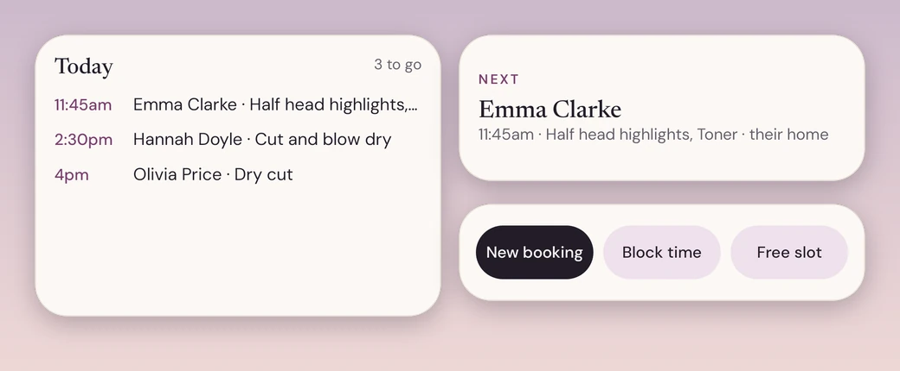
Everything is in, and all of it is free
Booking software usually charges by the month and by the text, and is built for a salon with a front desk. MChair is built for the car and the spare room, with nothing to pay, because there is no paid version.
- One diary, out and at home
- Every booking is at the client's home, at your home, or at a venue such as a care home. Each has its own colour, so the day reads at a glance.
- Travel worked out for you
- MChair links the day up: from home to the first visit, from each visit to the next, and back home after the last. Travel is blocked out, so you are never booked somewhere you cannot reach.
- Journeys it remembers
- Each client card holds their address, minutes from home and miles. Set the drive between two clients once and MChair uses it every time they are booked back to back.
- Out days and home days
- Mark each working day as out on visits, at home, or both. Free times only show what fits, and a one-off change turns a day round.
- Processing time, where it counts
- At home, the time a colour develops stays free for another client. Out on a visit you stay with the client, and MChair books it that way.
- The day's route
- One tap opens the whole day in Google Maps, from home, through every visit in order, and home again. Directions to any single visit are one tap too.
- Someone knows where you are
- Send your day, with times and addresses, to someone you trust from the Route screen. It is a text you see before it goes, and nothing is sent without you.
- Mileage for your tax return
- Miles from each client card and venue are added up for any week, month or year, with the claim at HMRC's simplified rates. It goes in the report and the spreadsheets.
- Call-out fees
- Set a call-out fee once and it is added to every visit. Change it on any booking, and see it on its own line in your takings.
- Venues and care homes
- Book several residents at the same care home or wedding back to back with no travel between them. Venues are remembered for next time.
- Drag to move, stretch to lengthen
- Hold a booking and drag it to another time, or pull its bottom edge to make it longer. Clashes, travel included, are flagged before anything is saved.
- Time off, blanked out properly
- Holidays, days off, training, lunch and closures. Repeat a block every working day, every week or every fortnight, and skip a single date.
- Bank holidays built in
- UK bank holidays for England and Wales, Scotland or Northern Ireland, worked out by the app, substitute days included.
- Nobody gets forgotten
- Block out time over existing bookings and MChair lists every client it lands on, so you can move or message each one before you go.
- Reminders in one tap
- Two wordings: one for visits (“I'm coming to you tomorrow at 10”) and one for clients coming to you, with your address and parking. Text or WhatsApp, or sent automatically from your phone.
- Clients, properly
- Address, travel and miles, notes, an alert for anything important, every visit, spend, how often they come back, and their no-shows and late cancellations.
- Colour formulas and skin tests
- Save each formula and copy last time's in one tap. Record skin tests and results, with warnings when a colour booking is too soon, out of date or after a reaction.
- Before and after photos
- Taken with your camera or picked from your gallery, then kept encrypted inside MChair, out of your phone's gallery.
- Repeat bookings and a waiting list
- Book a run every three to twelve weeks in one go, rebook after payment, and fill gaps from a waiting list with the offer written for you.
- Takings and a report
- Card, cash or transfer, with tips, products and call-outs. Any day, week, month or year, with a tidy A4 PDF and spreadsheets for your accountant.
- Widgets and your calendar
- Today's list, who is next, and quick buttons on your home screen. Copy the diary into your phone's calendar, with addresses as locations.
- Bring your clients with you
- Import them from a spreadsheet, your phone's contacts, or a Chair backup.
- Data protection and backups
- Give a client a copy of their record, forget a client, find clients you have not seen for years. Password-locked backups and a daily copy to a folder you pick.
- Private and locked
- Everything is encrypted on your phone, with a PIN or fingerprint lock. No account, no adverts, and the app cannot go online.
Built around the round
General booking apps treat an appointment as one block of time in one place. A mobile hairdresser's day is drives, doorsteps and the odd client in the spare room, and MChair is built for the way it really goes.
- Travel
Linked up
Home to Jo at 9:30, Jo to Kim at 11, Kim home again. MChair blocks each drive, so the next booking can only go where you can get to in time.
- Travel
Remembered
Until the drive between two clients is known, MChair guesses from their time from home and says so. Set it once and it is right from then on.
- Colour
Processing time
At home, the 35 minutes a root tint develops stay free for someone else. On a visit, you stay, and the diary knows.
- Safety
Skin tests
A warning on any colour booking within 48 hours of a test, after a reaction, or once a test is older than you allow.
- Money
Mileage and call-outs
Miles and call-out fees counted as you go, with the claim at HMRC's rates for the tax year.
- Clients
Reliability
No-shows and late cancellations counted for you, so you know who to ask for a deposit before you drive out.
Travel, without the guesswork
Most diaries leave you to work out whether you can get from one client to the next. MChair does it for you. Put each client's minutes and miles from home on their card, and every booking knows where you were before it.
The first visit of the day starts from home, each visit after starts from the last, and the drive home after the last visit is blocked out too. Book someone at home after a visit, and the drive back is counted before them.
A drive between two clients is marked as a guess until you set it. Set it once, and it is remembered both ways.
Where a booking can be
- Client's homeTravel either side, call-out added
- My homeProcessing time free for someone else
- VenueCare homes, weddings and hotels, with no travel between residents
Kinds of day
- OutOnly visits are offered
- At homeOnly clients coming to you
- BothWhatever fits
Takings and miles your accountant will like
At the end of the month or the tax year, make a clean A4 report of everything taken: totals, tips, call-out fees, how people paid, visits out and at home, business miles with the claim at HMRC's rates, the best services and the busiest days, with every payment listed. Spreadsheets of the same figures are one tap away.
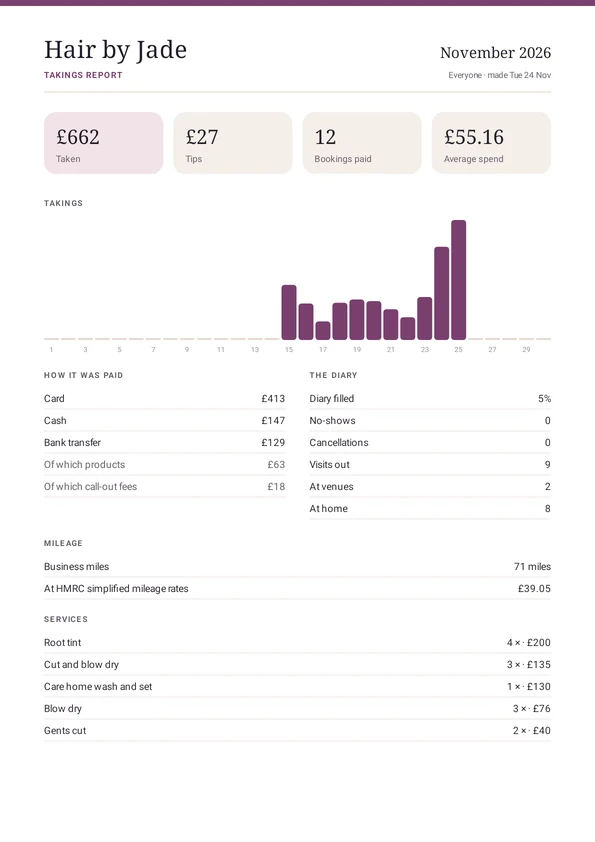
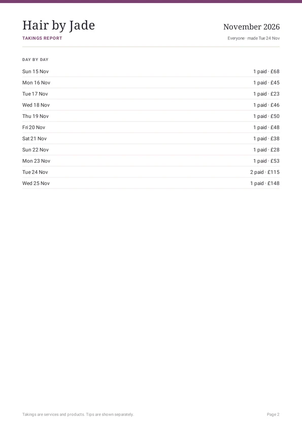
What it asks of your phone
MChair has no access to the internet. Everything it can reach is listed here, with what it does and what it never does. Each one is asked for only when you first use the feature that needs it.
| Access | What MChair does with it | What it never does |
|---|---|---|
| Notifications | Tells you when tomorrow's reminders are ready or have been sent. | Send offers, tips or anything you did not ask for. Client names never show on the lock screen. |
| Sending texts | Sends tomorrow's reminders as ordinary texts, only if you switch automatic texts on. | Send anything else, or read your messages. |
| Maps | Opens your maps app with directions to a visit, or the day's route, when you tap. | Know where you are. MChair has no access to your location. |
| Contacts | Lets you import clients from your phone's contacts, if you choose to. | Read your contacts at any other time, or keep anyone you did not pick. |
| Calendar | Copies the diary into the one calendar you choose, if you switch it on. | Read or change any other calendar or event. |
| Camera and photos | Opens your camera app, or lets you pick photos, for a client's before and after pictures. | See your gallery. Only the photo you pick or take is passed to MChair. |
| Starting after a restart | Puts the reminder time back after the phone restarts. | Keep running in the background. |
| Fingerprint or face | Unlocks the app, if you turn the app lock on and choose it. | See or store your fingerprint. Android keeps that to itself. |
| A file or folder you pick | Saves or reads a backup, a report or a spreadsheet where you choose. | Look at anything else in your storage. |
| Internet access | None. The app does not ask for it. | Send your diary, clients or anything else off your phone. |
The detail is in the privacy policy.
Your clients stay yours
Nothing is collected
Your diary, clients and their addresses, formulas, photos, takings and miles are kept on your phone, encrypted. The developer never sees them.
It cannot go online
The app does not hold Android's internet permission, so it has no way to send anything to a server.
No accounts, no adverts
There is nothing to sign up for, no advertising and no analytics, and your client list is never used to market anything.
Free, without the monthly bill
The big booking systems are good, and they charge for it every month. For a hairdresser who keeps their own diary, MChair does the job for nothing.
- No monthly fee
- Fresha's plans in the UK start at £14.95 a month, Booksy at £40 a month, and Timely at about £22 a month for each member of staff. MChair costs nothing.
- No charge for texts
- Reminders go from your own phone, so they cost whatever your plan charges for a text, which is usually nothing extra.
- No fee on new clients
- Marketplace apps can take a share of a new client's first visit. MChair has no marketplace and takes nothing.
Questions
Who is MChair for?
A hairdresser working on their own who visits clients at home and also sees clients at their own home. It keeps one diary for one person. For a salon with several stylists, its sister app Chair is the better fit.
Is MChair really free?
Yes. There is no paid version, no subscription, no fee on new clients and no adverts. Nothing in the app is locked.
Is it on Google Play?
No. MChair is a personal project and is downloaded from this site as an Android app file. It needs Android 8 or later, which covers almost every phone in use.
How does it know how far away a client is?
You tell it, once, on the client card: how many minutes from your home and how many miles. MChair does not look anything up online, so it works with no signal and nobody tracks where you go. The drive between two clients is a guess until you set it, and then it is remembered.
Is the mileage figure right for my tax return?
It adds up the miles you put on client cards and venues, and works out the claim at HMRC's simplified mileage rates for the self-employed: 55p a mile for the first 10,000 business miles in a tax year from 6 April 2026, and 25p after. Rates can change, so check GOV.UK each April and change them in Settings. It is a guide, not tax advice: check with your accountant.
Does it need the internet?
No. The app does not ask Android for internet access at all, so it cannot go online. The route and directions open in your maps app, texts go out through your own phone, and WhatsApp messages open in WhatsApp for you to send.
Where are my clients' details kept?
Only on your phone, in the app's private storage, encrypted with a key held by Android. Nothing is uploaded, and the developer receives nothing.
Can my clients book online?
No. MChair is your own diary, kept on your phone. Clients book with you by phone, message or in person.
I use Chair now. Can I move over?
Yes. Save a backup in Chair, then in MChair choose Restore from a backup and enter the same password. Everyone's bookings go into the one diary, and home visits become visits out, with their travel time kept on the client card.
What about GDPR?
Client details, addresses included, stay on your phone and are never shared. MChair can give a client a copy of their record, forget a client completely, find clients you no longer need to keep, and includes a privacy notice you can show clients.
What if I forget my PIN?
There is no way round the PIN, not even for the developer. You can clear the app's storage in your phone's settings, which deletes everything, and then restore your latest backup.
Who made it?
MChair is made by Jonathan Jackson, an independent developer in the United Kingdom. It is not connected with any other salon software company.